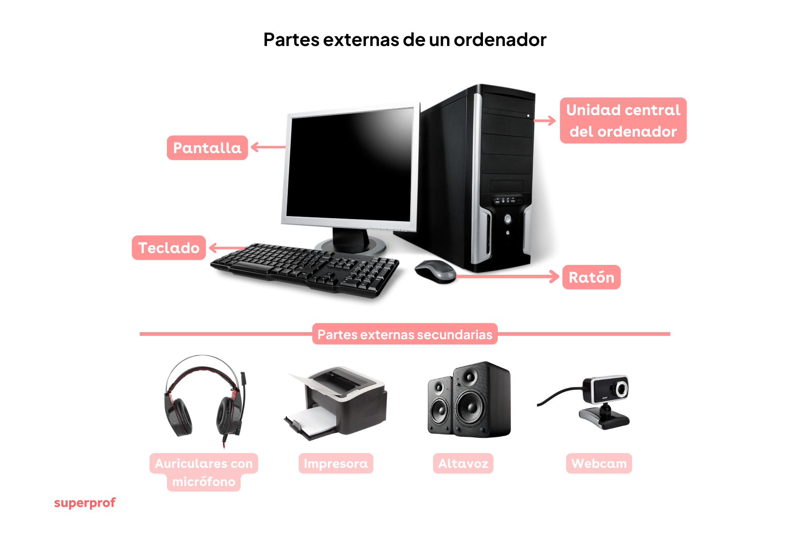

Arquitectura del Computador
La arquitectura del computador es la forma en que están organizados y conectados los diferentes componentes de un sistema informático.
Incluye tanto las partes físicas (hardware), como la forma en que el software se comunica con ellas.
Su objetivo es lograr que todos los elementos como el procesador, memoria, almacenamiento y dispositivos de entrada y salida, trabajen juntos de manera eficiente.
Componentes principales:
- Unidad Central de Procesamiento (CPU): ejecuta instrucciones y coordina las operaciones.
- Memoria: guarda datos e instrucciones temporalmente.
- Dispositivos de Entrada/Salida: permiten la interacción con el usuario (teclado, monitor, mouse, etc.).
- Almacenamiento: conserva la información de forma permanente.